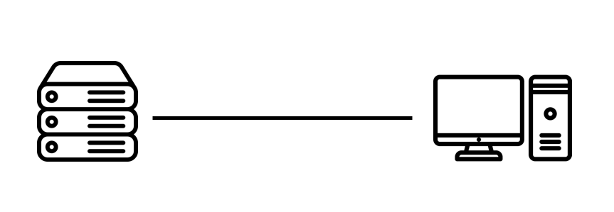
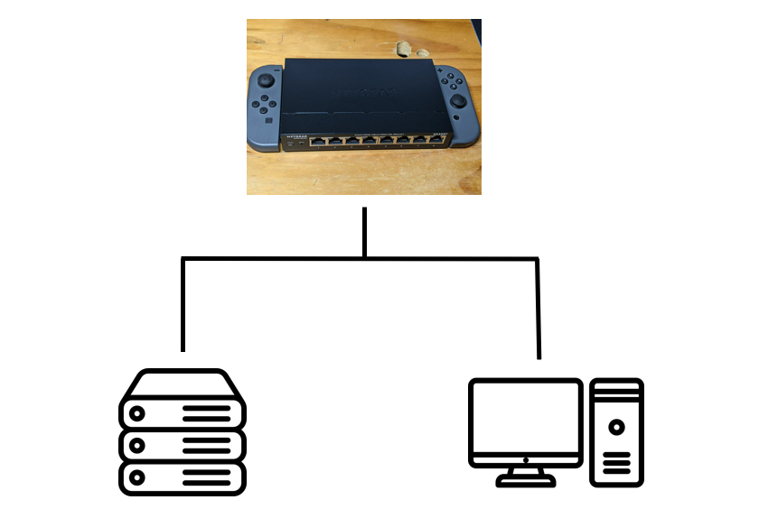
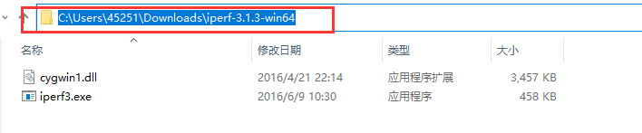
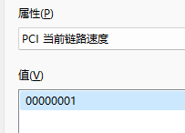
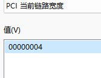

SMB 10G 传输文件排难指南
入入入入入入入门教程系列？
前情提要
很多人在组完NAS，尤其是10G往上局域网或者直连的用户，经常会遇到SMB拷贝一个文件，达不到预计速度，然后问：“我这个NAS系统（万兆网卡）怎么跑不满10G？”
：“？“
这篇文章会记录一些最基础的排难方式。同时这也能学会如何iperf3和fio命令，以及查看PCIe设备速率。
原因&&分析
当你从挂载的SMB共享拷贝到NAS或者本地，其实中间有很多个环节。
以NAS通过10Gbps网卡直连PC，从本地写入一个文件到NAS为例，能跑到10Gbps需要大致以下的条件：

- Windows本地磁盘的读取速度大于等于10Gbps
- Windows本地网卡（上行）速度大于等于10Gbps
- NAS磁盘写入大于等于10Gbps
- NAS网卡（下行）大于等于10Gbps
- Windows以及NAS满足SMB 10Gbps单核性能
其实可以看到，大体就是磁盘速度+网速，但是影响这2个因素的问题又有好多。
还有一种架构，即服务器和PC均在10G交换机下，分别通过10G链接到交换机，虽然多了交换机，但是10G交换机基本不会对环境造成比较大的影响，除了记得在开启PC和NAS 巨帧的同时，交换机也要打开就行。

测试方法
Windows本地磁盘的读取速度大于等于10Gbps？
测试
https://crystalmark.info/en/software/crystaldiskmark/
请！这还要教？不行就用各种工具箱里面的。
排难
顺序读写能大于1000MB/s就超过万兆网卡速率了，大部分上面跑不到1000MB/s无非就是SATA SSD和机械硬盘，所以拷贝测试万兆的时候把目标硬盘或者源硬盘选择为NVMe硬盘即可。
Windows本地网卡（上行）速度大于等于10Gbps && NAS网卡（下行）大于等于10Gbps？
测试
首先，要用iperf3工具，iperf3的测试是纯网络测试和硬盘速度无关，所以能确定NAS到Windows的网络吞吐是否达标。
- 下载&&安装
Windows需要自行下载工具
Windows工具下载：
（官网）https://iperf.fr/download/windows/iperf-3.1.3-win64.zip
（本站）https://alist.homelabproject.cc/d/local/Server/Tools/iperf-3.1.3-win64.zip
NAS端安装iperf3
Ubuntu/Debian(PVE/OMV)
TrueNAS SCALE/CORE以及 UNRAID自带无需安装。
1
apt update && apt install iperf3 -yCentOS(还有人用？会用得也不用教吧（
1
yum install iperf3-y群晖等其他没用过给不了教程，这边建议”百度“。
- 使用
iperf3命令分为服务端和客户端，但是在这里的测试中，在哪边跑都行。但是需要先运行服务端。
服务端
1
iperf3 -s -p 52239解释：
-s：代表进入服务端模式
-p：表示指定iperf3服务端口，即使不加会有个默认端口，但是为了避免端口冲突我这里制定了一个，实际可以根据你自己随便给个数字都行
客户端
1
iperf -c 192.168.0.123 -p 52239 -P 5 -t 10 -d解释：
-c：代表进入客户端模式，需要链接服务端，后面的参数
192.168.0.123，替换成刚刚运行服务端的IP地址即可-p：指定服务端的端口，需要与上方服务端端口一致即可
-P：代表线程数，即到服务端并行的连接数，这边建议照抄给5就行，一般来说能解决单线程跑不满问题，5个线程跑不满10G基本给多了也没用（注意这里的-P是大写）
-t：代表运行时间（单位是秒），10以上基本结果差距不大了，可以自行调整或者抄作业
-d：代表测试双向，发送和接受
注意这些命令在NAS系统(Linux)可以直接执行
在Windows下需要先解压刚刚下载的压缩包，然后Win键+R输入cmd打开命令行
输入
cd /盘符 "iperf3解压出来文件夹的路径"，路径可以直接复制windows资源管理器上方的地址例如：

1
cd "C:\Users\45251\Downloads\iperf-3.1.3-win64"然后由上文的命令开头 ”
iperf3“ 变为 ”.\iperf3.exe“，后面部分一致效果如图：

- 分析结果
执行完命令就能看到最后的结果，实例如下：

① Interval表示时间间隔。
② Transfer表示时间间隔里面转输的数据量。
③ Bandwidth是时间间隔里的传输速率。
蓝色框数据是最终的结果，也是5组数据（-P 5 参数）的和，而且因为我们设置了-d，有2组数据分别是发送（sender）和接收(receiver)。除此之外有10组数据，因为我们设置了5个线程+同时测试双向。
可以看到在蓝色框里面我们以及跑满了10Gbps的带宽，证明在网络带宽方面，Windows到NAS端没用问题
排难
错误
如果结果如下
Transfer只有7.53GBytes以及Bandwidth6.47Gbits/sec时，即代表带宽出现了问题。那么就需要进行排难了。

（使用了多线程测速，那么往往是否开启巨帧对结果不会有影响）
从经验来看，iperf3测试无法跑满大概率是因为两边的网卡其中一端的PCIe速率无法满足万兆的需求。因为很多用户使用消费级主板都会把万兆网卡插在非第一槽，而很多厂商有喜欢把他们的来自芯片组的PCIeX1 X4带宽的插槽做成X16的物理插槽来”提升扩展性“，实际只能跑在X1或者X4。但是其实PCIe2.0x4或者PCIe3.0x2以上都已经能满足万兆单口的需求了，大部分仔细查看主板说明书，基本能知道。
关于PCIe速率能跑什么速度，可以参考下面的图，记得乘以0.7左右的损耗，比如PCIe2.0X2写的1.00GB/s，好像理论能跑万兆，实际只能跑在6、700MB/s左右的速度

即使主板写的很清楚，但是也不排除一些阴间情况，比如使用一些延长线，掉PCIe速率，甚至是长度。比如我买到过一根标注M2转PCIeX4的线，只能最高跑在X2（？），导致上2.0卡跑在PCIe2.0X2时就无法跑满万兆带宽。
所以最方便的方法是在系统内查看当前协商速度。
Windows：在“设备管理器”中找到你的网卡，双击点开后，点击详细信息，下来属性框，应该能找到2个参数，如下2个参数
PCIe当前链路宽度代表PCIe槽的长度即PCIeX(16/8/4/1)
PCIe当前链路速度代表PCIe(4/3/2).0
例如：


即当前设备运行在
PCIe1.0 X4（需要注意的是这里的数值是16进制，不过网卡都是X4 X8的，就不用管就行）
另外如果是Mellanox的卡，是可以在属性的information里面直接看到速率的


Linux：
先查看一下网卡，找到你自己的网卡，可以看到我这里的是c2:00.0
sudo lspci | grep -i eth所以再用下面命令查询c2:00.0的vendor id和device id
lspci -n | grep -i c2:00.0最后用这个命令就能查询到当前的的链接速度
lspci -n -d 8086:10fb -vvv | grep -i width可以看到我的链接速度(Speed)是5GT/s, 宽度（Width）是X8，链接速度可以直接对应上面的表，就可以直接现在这张卡跑在PCIe2.0x8，带宽是没问题的

查询的步骤就分为这2部分，如果有一边低于PCIe2.0x4或者PCIe3.0x2的话，就代表无法跑满万兆，需要更换一个PCIe位置。
NAS磁盘写入大于等于10Gbps？
测试
这里要用到Fio 是一个功能强大的 I/O 压力测试工具，可以对硬盘进行顺序读写测试。
- 安装
Ubuntu/Debian(PVE/OMV)
apt update && apt install fio -y
CentOS(还有人用？会用得也不用教吧（
yum install iperf3-y
- 使用
先用cd 命令进入你要测试的文件系统或者阵列
1
cd [需要测试的路径]然后使用下面命令创建一个FIO测试文件的配置文件
1
2
3
4
5
6
7
8
9
10
11
cat > test_disk_read.fio <<EOF
[seq-read]
name=Sequential Read Test
ioengine=libaio
iodepth=8
rw=read
bs=1M
size=10G
numjobs=16
runtime=60
EOF1
2
3
4
5
6
7
8
9
10
11
cat > test_disk_write.fio <<EOF
[seq-write]
name=Sequential Write Test
ioengine=libaio
iodepth=8
rw=write
bs=1M
size=10G
numjobs=16
runtime=60
EOF（照抄作业就行，关于具体参数，日后更新吧。。）
- 开始测试
测试读取
1
fio test_disk_read.fio测试写入
1
fio test_disk_write.fio（测试需要一定时间）
最后应该我们会得到这样一个测试结果，READ代表读取，WRITE代表写入，如果2者均超过1000MiB/s，那么在万兆传输这一个问题应该不会产生瓶颈。
1
2
3
Run status group 0 (all jobs):
READ: bw=1072MiB/s (1124MB/s), 1072MiB/s-1072MiB/s (1124MB/s-1124MB/s), io=10.0GiB (10.7GB), run=9553-9553msec
WRITE: bw=2003MiB/s (2100MB/s), 2003MiB/s-2003MiB/s (2100MB/s-2100MB/s), io=10.0GiB (10.7GB), run=5113-5113msec排难
其实这一部分无非也就是你机械阵列的问题，需要优化你的阵列速度，那不同文件系统就相差甚远，需要自己进行调整，这里只能帮忙定位问题。
Windows以及NAS满足SMB 10Gbps单核性能？
其实这也是非常简单的，Windows传文件的时候打开任务管理，查看在跑不满的时候，是否有一个核心跑满了，那就证明单核性能瓶颈了。（2023年应该不会有U单核这样瓶颈吧）
总结
这篇文件给出了一个最基础问题的定位方式，以及命令简单的理解，基本能解决97%（？）的问题，后面可以考虑再更新一下FIO命令的详细解释，不过这东西网上一堆，这里给出教程只是希望你在着急使用时能快速学会，不会因为看一遍文章，要去翻好几篇才能看懂。
引用&&备注
https://en.wikipedia.org/wiki/PCI_Express
“Icon made by Nikita Golubev from www.flaticon.com”
“Icon made by Pixel perfect from www.flaticon.com”